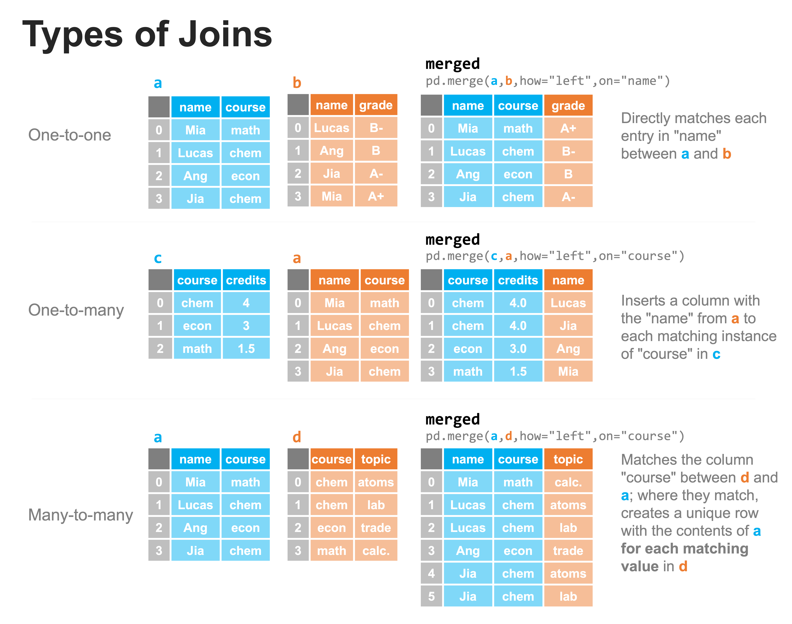

Combining datasets: joins#
In the last lesson, we saw how concatenate can be used to append rows or columns to a DataFrame. However, we also saw the potential pitfalls where there are data mismatches between the two datasets. In this lesson, we’ll explore merge and how to bring datasets together in ways the factor in the existing content of the DataFrame.
Suppose…
You are analyzing the accounts of a firm and were given one dataset with that contained transactions with the corresponding dollar amounts and vendor ID number and a second dataset that contained the vendor ID and the name and industry of the vendor. How could you determine which vendor corresponds to each transaction?
You are developing a system to compute the credits that each student received from taking classes. You have one dataset that has the students and the name of the class they’re taking, and a separate dataset that list the classes and the number of credits each class provides. How do you determine the number of credits each student is taking?
You are on the marketing team where each employee is signed to one of the clients of the firm. In most cases, multiple employees are signed to a single client (forming the client team) and those employees may, themselves work with multiple clients (they are part of multiple teams). Each client has one or more products. How do we get a list of each product that each employee is working on?
We can address each of the above issues by combining datasets using merge. In fact, we’ll see that each of the above examples represents a different type of merge (one-to-one, one-to-many, many-to-many, respectively).
To help us with this discussion, let’s again create two DataFrames that we want to combine; these will be a little different this time:
import pandas as pd
pd.set_option("mode.copy_on_write", True)
dfa = pd.DataFrame(
{
"animals": ["dog", "cat", "bird", "fish"],
"location": ["land", "land", "air", "water"],
"has_fur": [True, True, False, False],
}
)
dfa
| animals | location | has_fur | |
|---|---|---|---|
| 0 | dog | land | True |
| 1 | cat | land | True |
| 2 | bird | air | False |
| 3 | fish | water | False |
dfb = pd.DataFrame(
{"animals": ["fish", "elephant", "blue whale"], "avg_weight": [4, 12000, 300000]}
)
dfb
| animals | avg_weight | |
|---|---|---|
| 0 | fish | 4 |
| 1 | elephant | 12000 |
| 2 | blue whale | 300000 |
There are a few differences to note here. First, there is one shared column in each DataFrame and that is ‘animals’; the rest are unique. Also, while most of the animals are distinct between these two datasets. To that end, there are 3 ways in which we could merge these DataFrames together referring to the uniqueness of the matches between one dataset and the other:
One-to-one. Each entry in a column of one dataset matches to at most one entry in the column of the second dataset (also, the merge keys are unique in both datasets). This is the simplest case to encounter.
One-to-many. For the column to merge on, there may only be one row with each unique value in that column in one of the datasets, while there may be multiple values in the corresponding column in the other dataset.
Many-to-many. There may be multiple rows containing the same value in the merge column for each of the datasets.
Each of these above situations can be handled with the merge method. The types of joins are illustrated graphically below:

The above examples each work exactly as written. You’ll notice two parameters, “how” and “on”. The parameter “on” specifies which column to compare in each of the two DataFrames, assuming they are named the same in both (if not, you can use “left_on” and “right_on” to specify them separately). The parameter “how” specifies how the merge is to be performed, but we will discuss that more later in this lesson; for now, we use the “left” join, and just know this means we’re always using the left DataFrame as out point of reference for comparing columns. Let’s verify that each of the above merges work as expected. First, the one-to-one:
a = pd.DataFrame(
data={
"name": ["Mia", "Lucas", "Ang", "Jia"],
"course": ["math", "chem", "econ", "chem"],
}
)
a
| name | course | |
|---|---|---|
| 0 | Mia | math |
| 1 | Lucas | chem |
| 2 | Ang | econ |
| 3 | Jia | chem |
b = pd.DataFrame(
data={"name": ["Lucas", "Ang", "Jia", "Mia"], "grade": ["B-", "B", "A-", "B+"]}
)
b
| name | grade | |
|---|---|---|
| 0 | Lucas | B- |
| 1 | Ang | B |
| 2 | Jia | A- |
| 3 | Mia | B+ |
merged = pd.merge(a, b, how="left", on="name")
merged
| name | course | grade | |
|---|---|---|---|
| 0 | Mia | math | B+ |
| 1 | Lucas | chem | B- |
| 2 | Ang | econ | B |
| 3 | Jia | chem | A- |
Next the one-to-many:
c = pd.DataFrame(data={"course": ["chem", "econ", "math"], "credits": [4, 3, 1.5]})
c
| course | credits | |
|---|---|---|
| 0 | chem | 4.0 |
| 1 | econ | 3.0 |
| 2 | math | 1.5 |
merged = pd.merge(c, a, how="left", on="course")
merged
| course | credits | name | |
|---|---|---|---|
| 0 | chem | 4.0 | Lucas |
| 1 | chem | 4.0 | Jia |
| 2 | econ | 3.0 | Ang |
| 3 | math | 1.5 | Mia |
And finally, the many-to-many:
d = pd.DataFrame(
data={
"course": ["chem", "chem", "econ", "math"],
"topic": ["atoms", "lab", "trade", "calc."],
}
)
d
| course | topic | |
|---|---|---|
| 0 | chem | atoms |
| 1 | chem | lab |
| 2 | econ | trade |
| 3 | math | calc. |
merged = pd.merge(a, d, how="left", on="course")
merged
| name | course | topic | |
|---|---|---|---|
| 0 | Mia | math | calc. |
| 1 | Lucas | chem | atoms |
| 2 | Lucas | chem | lab |
| 3 | Ang | econ | trade |
| 4 | Jia | chem | atoms |
| 5 | Jia | chem | lab |
Each of these are very clean examples of the three types of joins: one-to-one, one-to-many, and many-to-many. Incomplete data are common, however, when either a or b are missing some of the content that would otherwise allow for a match. We will explore how to handle these situations with merge in the next lesson.